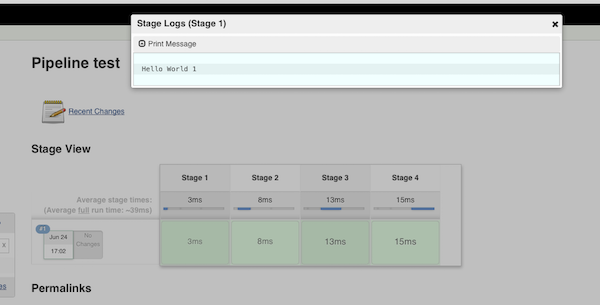
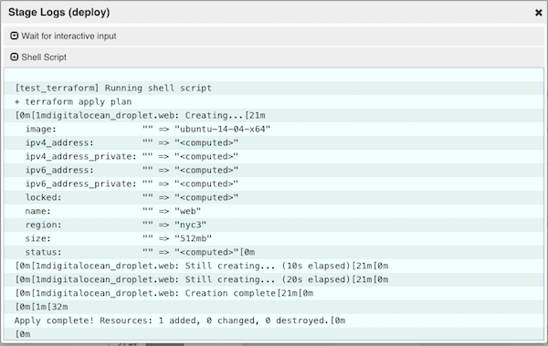

Jenkins 2.0 was released a few weeks ago. One of the main problems that I use to had in Jenkins was multi-stages jobs, there was a plugin from Cloudbees but it was difficult to use. This new version implements pipelines based on a Jenkinsfile in the root of the project. This is easier, quicker and in one word: awesome.
So, in jenkins 2.0 "stages" can be described in the Jenkinsfile. Stage can be explained as the different status that a job need to have. In a typical web application the stages will be the following:
- test: Run in parallel unittest and integration test.
- artifact: Compile the source
- Staging: to update your staging platform
- Prod: Update your prod infraestructure.
A very simple multi-stage Jenkinsfile looks like this:
node {
stage 'Stage 1'
echo 'Hello World 1'
stage 'Stage 2'
echo 'Hello World 2'
stage 'Stage 3'
echo 'Hello World 3'
stage 'Stage 4'
echo 'Hello World 4'
}
And you're going to have a lovely dashboard like this:
Checkout, run test and compile the artifacts can be done in the past without pipelines, but what about the deploys? It was possible, but human integration was added in pipelines and the solution is great for tools like Terraform.
Review a plan is one of the best features of Hashicorp Atlas. An engineer will always be sure that the plan will be applied correctly using terraform. Now this can be possible with a few lines of code:
node {
stage 'checkout'
checkout scm
stage 'test'
parallel (
phase1: { sh "echo p1; sleep 20s; echo phase1" },
phase2: { sh "echo p2; sleep 40s; echo phase2" }
)
stage name: 'build', concurrency: 1
sh "packer build project.json"
stage name: 'plan', concurrency: 1
sh "terraform plan --out plan"
stage name: 'deploy', concurrency: 1
def deploy_validation = input(
id: 'Deploy',
message: 'Let\'s continue the deploy plan',
type: "boolean")
sh "terraform apply plan"
}
With this code you can easy review changes that terraform will make and deploy your infrastructure with the right human interaction. This code is too simplified but you can do all the business logic that you want. Complete list of examples can be found in github.
From my point of view this is a big step forward for continuous delivery, I always miss a tool that I can make pipelines into our organization. From now all my fellows can see in what state is each build. In the other hand, Cloudbees is working in a new UI, blueocean, it is great and it'll make even simpler to review it.
Related with the Jenkinsfile DSL reference, Cloudbees wrote a complete blog post with all commands. Furthermore full pipelines documentation can be found in jenkins webpage.